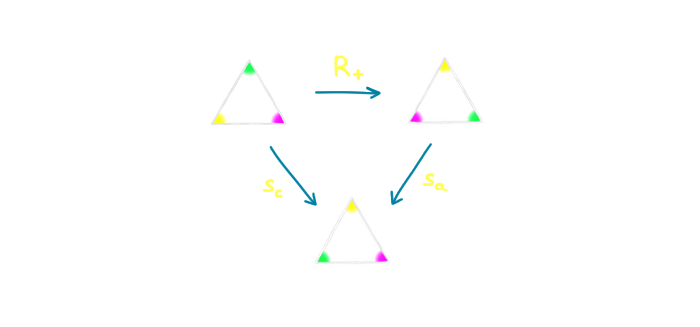
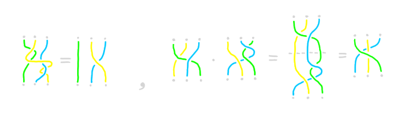

В группах скрыта вселенной тайна,
Повторы многих миров в едином танце.
Симметрия жизни, порядок и хаос,
Вечный баланс, что ведёт нас к космосу.
Философский стих от ChatGPT
Основное определение этой лекции — группа. Прежде, чем давать его формально, рассмотрим следующий пример:
Пусть дан равносторонний треугольник на плоскости. Мы понимаем, что он достаточно симметричен, например у него
есть три оси симметрии.
Что означает, что фигура имеет ось симметрии?
Это означает, что если отразить её относительно этой оси, то фигура перейдёт сама в себя.
Иными словами, у нас есть преобразование треугольника, которое переводит этот треугольник сам в себя.
Какие ещё преобразования с похожими свойствами мы можем найти?
Немного подумав, можно найти ещё два: поворот треугольника на 120 градусов по и против часовой стрелки.
Иначе говоря, мы говорим, что "треугольник симметричен относительно поворотов на соответствующие углы".
Есть ещё одно, особое преобразование, заключающееся в том, чтобы ничего не делать.
Мы будем обозначать его \(\id\).
Несмотря на то, что оно очень тривиально, оно играет существенную роль.
В частости, любая фигура имеет такую тривиальную симметрию.
Итого, мы получили шесть преобразований: три симметрии, два поворота и \(\id\).
Обозначим наши преобразования через \(s_a, s_b, s_c, R_+, R_-\),
где \(s_a, s_b, s_c \) — отражения относительно соответствующих осей,
\(R_+, R_-\) — повороты на 120 градусов по и против часовой стрелки соответственно.
Каждое из этих действий как-то двигает треугольник (поворачивает, переворачивает или вообще ничего не делает),
а значит, после того как применил одно действие, можно сделать ещё одно.
Например, можно дважды повернуть по часовой стрелке и получить поворот на 240 градусов!
Заметим, что поворот треугольника на 240 градусов по часовой стрелке это то же самое,
что и поворот против часовой на 120 градусов. Поэтому мы можем записать это в виде следующего выражения:
\[R_+ \cdot R_+ = R_-,\]
где '\( \cdot \)' обозначает композицию действий.
Аналогичную конструкцию мы можем сделать для любых двух симметрий.

Углы покрашены для того, чтобы видеть, как соответствующее преобразование действует на треугольник.
В частности, если сделать одну и ту же симметрию относительно данной оси два раза подряд,
результат будет "ничего не делание", т.е. \(\id\).
Иными словами,
\[s_a \cdot s_a = \id. \]
Задача 1. Постройте табличку 6x6 для всех возможных пар последовательных действий и обнаружьте,
что каждый раз получается одно из шести известных нам действий.
Задача 2. Докажите, что существует всего шесть симметрий треугольника.
Указание: симметричное преобразование однозначно задаётся перестановкой вершин. Задача 3. Постройте такие фигуры на плоскости, для которых существует ровно четыре симметрии (включая
\(\id\)) и
а) не все симметрии являются поворотами на плоскости;
b) все симметрии являются поворотами на плоскости.
Если вы построили табличку, вы можете заметить следующие очевидных свойства наших симметрий:
Для любых трёх симметрий \(x, y, z\) не важно как расставить скобки в композиции:
\[ (x \cdot y) \cdot z = x \cdot (y \cdot z). \]
Ничего не делание (\(\id\)) никак не изменяет симметрии при композиции, т.е. для любой симметрии \(x\) верно
\[ \id \cdot x = x \cdot \id = x. \]
Для любого действия существует "отменяющее его действие", т.е. для любого \(x\) существует такой \(y\), что
\[ x \cdot y = y \cdot x = \id. \]
Заметим, что не обязательно \(y\) должен отличаться от \(x\),
например симметрия к \(s_A\) обратная ей будет она же.
Заметим, что множество всех симметрий любой фигуры на плоскости удовлетворяет тем же свойствам. Мало того, похожим
свойствам удовлетворяют и другие множества. Пример:
Пусть \(\mZ\) — множество целых чисел,
\[ \mZ = \{..., -3, -2, -1, 0, 1, 2, 3, ...\} \]
Тогда операция сложения обладает
аналогичными свойствами!
Для любых трёх чисел \(x, y, z\) не важно как расставить скобки:
\[ (x + y) + z = x + (y + z). \]
Прибавление нуля никак не изменяет числа при сложении, т.е. для любого числа \(x\) верно
\[ 0 + x = x + 0 = x. \]
Для любого числа существует "отменяющее его относительно сложения", т.е. для любого \(x\) существует такой
\(y\), что
\[ x + y = y + x = 0. \]
Упражнение. Проверьте аналогичное свойство для ненулевых рациональных чисел и операции умножения.
Что будет выступать здесь в роли \(\id\)?
Рассмотрим ещё один пример: косички из трёх нитей. Две косички будем считать одинаковыми, если можно,
удерживая концы нитей на месте, превратить одну косичку в другую (не разрезав нити). Для любых двух косичек мы
можем приставить вторую к концу первой. Это задаёт бинарную операцию.

Задача 4. Проверьте наши свойства для косичек. Что будет выступать здесь в роли \(\id\) и "обратной" косы?
Что, если ниток не три, а \(N\)?
Итак, мы увидели уже три разных случая, когда на множестве некоторых объектов возникает операция с похожими
свойствами.
Пришло время абстрагироваться и ввести формальное определение той структуры, которая описывает все изученные нами
примеры.
Множество \(G\) называется группой, если на нём введена бинарная операция \(\cdot\),
такая,
что выполняются следующие свойства:
Ассоциативность: для любых элементов \(x, y, z\) из \(G\) верно
\[ (x \cdot y) \cdot z = x \cdot (y \cdot z). \]
Существование нейтрального элемента:
Существует элемент \(e\) такой, что для любого элемента \(x\) из \(G\) верно
\[ e \cdot x = x \cdot e = x. \]
Существование обратных элементов: Для любого \(x\) из \(G\) существует такой \(y\) из \(G\), что
\[ x \cdot y = y \cdot x = e. \]
Обычно обратный элемент к \(x\) обозначают \(x\inv\), а вместо \(x\cdot y\) пишут просто \(xy\).
Все примеры, которые мы рассматривали раньше были группами. Напишем их ещё раз, вместе с традиционными
обозначениями:
\(D_3\): группа симметрий треугольника.
Состоит из шести элементов — \(\id\), двух поворотов и трёх осевых симметрий.
Операция — композиция действий.
Нейтральный элемент — \(\id\).
Обратный элемент к поворотам — поворот в противоположную сторону,
обратный элемент к осевой симметрии — эта же осевая симметрия
\(\langle \mZ, +\rangle\) или просто \(\mZ\): группа целых чисел относительно сложения.
Состоит из бесконечного числа элементов — целых чисел.
Операция — сложение.
Нейтральный элемент — 0.
Обратный элемент к числу — минус это число.
\(B_N\) или \(\text{Br}(N) \): группа кос.
Состоит из всех косичек с \(N\) нитями;
Операция — добавление одной косички в конец другой.
Нейтральный и обратные элементы — задача.
Приведём ещё несколько примеров групп.
1, 0 или \(*\): тривиальная группа.
Состоит из одного элемента \(*\).
Операция — \(* \cdot * = *\).
Нейтральный элемент — \(*\).
Обратный элемент к \(*\) — \(*\).
\(\mZ/n\mZ\) или \( \mZ/n \): группа остатков по модулю \(n\).
Состоит из \(n\) элементов — \(0, 1, ..., n-1\).
Операция — сложение по модулю \(n\) (например, при \(n = 4, 3 + 2 = 1\)).
Нейтральный элемент — 0.
Обратный элемент к числу \(k\) это \(n - k\).
\(\mZ\times\mZ\): группа пар целых чисел.
Состоит из всех элементов вида \((m, n)\), где \(m\) и \(n\) — целые числа.
Обратный элемент к паре \((m, n)\) это \((-m, -n)\).
\(\text{Fr}_2\) или \(\mZ*\mZ\): свободная группа ранга 2.
Состоит из всех слов конечной длины (включая нулевую) из знаков \(a, a\inv, b, b\inv\),
таких, что в них нет подстрок вида \(aa\inv\), \(bb\inv\), \(a\inv a\), \(b\inv b\).
Операция — конкатенация слов с последующей редукцией подстрок указанных выше. Например
\[ aba\inv \cdot ab\inv a = aba\inv ab\inv a = abb\inv a = aa \]
Нейтральный элемент — пустое слово.
Задача 5. Найдите как выглядят обратные элементы и докажите,
что предыдущий пример действительно является группой.
Предыдущие четыре примера демонстрируют важные конструкции теории, появляющиеся в теории групп.
Тривиальная группа в некотором смысле является "начальной" и "конечной" и обладает некоторыми
универсальными свойствами (строгий смысл этих слов вы сможете понять узнав о теории категорий и немного в следующих
лекциях).
Остальные примеры показывают, что с группами можно делать определённые операции — можно "делить" и "умножать"
группы друг на друга, а так же делать, непонятную пока нам, операцию "\(*\)" ("свободное произведение").
Иначе говоря, группы можно собирать из "деталей" — других групп.
Как именно это делать мы узнаем в следующих лекциях.
Пока все примеры были группами. Рассмотрим несколько множеств, где введена бинарная операция,
но они не являются группами.
Множество \(\mN = \{1, 2, 3, 4, 5, ...\}\) натуральных чисел с операцией сложения не является группой, т.к.
в нём нет нейтрального элемента.
Множество \(\mN\) с операцией умножения так же не является группой, так как в нём отсутствуют обратные элементы.
Множество \(\mQ\) рациональных чисел с операцией умножения так же не является группой,
так как в нём наличествует элемент \(0\), обратного к которому не существует (на ноль делить нельзя!).
Для тех, кто знает, что такое векторное произведение. Множество трёхмерных векторов с операцией векторного
произведения так же не образует группу.
Задача 6. Проверьте аккуратно все аксиомы и строго покажите что не так с предыдущими примерами.
Среди предыдущих примеров есть несколько таких, в которых операция обладает дополнительным свойством,
к которому мы привыкли в обычном сложении или умножении.
А именно, в группах \(*, \mZ, \mZ/N, \mZ \times \mZ\) любые два элемента "перестановочны", т.е. для
любых элементов \(a, b\) верно \(a + b = b + a\). Такое свойство имеет специальное название:
Группа \(G\) называется коммутативной, если для любых двух элементов \(a, b\) из \(G\)
верно
\[a\cdot b = b\cdot a\]
Элементы, которые обладают таким свойством, называются коммутирующими.
Обычно в коммутативных группах операцию называют сложением и используют знак \(+\), а нейтральный элемент обозначают
через \(0\).
Таким образом, группы бывают коммутативными и некоммутативными.
Например, группа симметрий многоугольника некоммутативна, а группа остатков по модулю \(n\) коммутативна.
Задача 7. Докажите, что любая группа из трёх или четырёх элементов коммутативна.
Задача 8. Докажите, что если в группе \(G\) для любого элемента \(a\) верно \(a \cdot a = e\), то эта группа
коммутативна.
Задача 9. Опишите группу симметрий окружности, т.е. укажите как выглядят все её элементы и для любых двух её
элементов явно укажите чему равно их произведение.
Пример: повороты на произвольный угол являются элементами этой группы. Композиция двух поворотов это просто
поворот на сумму углов.
Завершить эту лекцию хочется понятием подгруппы. Иногда возникает ситуация, когда в данной
группе можно найти подмножество, которое относительно той же операции снова образует группу. Например, среди целых
чисел \(\mZ\) мы можем выделить только чётные числа
\[2\mZ = \{..., -4, -2, 0, 2, 4, ...\}.\]
Так как чётное число плюс чётное число является чётным, "минус" чётное число чётно и ноль так же чётен, мы получаем,
что относительно операции сложения чётные числа образуют "группу внутри группы". Такие подмножества называются
подгруппами. Формально мы имеем следующее определение:
Пусть \(G\) — группа и \(H\) — некоторое подмножество. \(H\) называется
подгруппой \(G\), если
Для любый элементов \(x, y\) из \(H\) их произведение также принадлежит \(H\).
Для любого элемента \(x\), его обратный элемент \(x\) так же лежит в \(H\)
Если \(H\) — подгруппа \(G\), то обозначают \(H < G\)
Упражнение. Докажите исходя из определения, что нейтральный элемент всегда принадлежит любой подгруппе.
В прошлом примере мы увидели, что \(2\mZ\) является подгруппой \(\mZ\) или \(2\mZ < \mZ\).
Вот ещё несколько примеров:
Каждая группа \(G\) имеет тривиальную подгруппу, состояющую только из нейтрального элемента:
\[\{e\} < G.\]
Вся группа \(G\) является своей подгруппой:
\[G < G.\]
Этот и предыдущий пример описывает тривиальные случаи. Такие подгруппы называются несобственными.
Целые числа являются подгруппой в рациональных числах, а те, в свою очередь являются подгруппой в вещественных:
\[\mZ < \mQ < \mR.\]
Для любого фиксированного целого числа \(k\), множество
\[k\mZ = \{ ..., -2k, -k, 0, k, 2k, ... \}\]
является подгруппой в \(\mZ\):
\[k\mZ < \mZ.\]
Множество пар целых чисел вида \((k, k)\), образует подгруппу в \(\mZ\times\mZ\):
\[ \{(k, k) | k \in \mZ \} < \mZ\times\mZ. \]
Элементы \(0, 3, 6\) образуют подгруппу в \(\mZ/9\).
Элементы \(0, 2, 4, 6, 8\) образуют подгруппу в \(\mZ/10\).
Примеры 4, 5 и 6 можно следующим образом обобщить:
пусть дана произвольная группа \(G\) и произвольный элемент \(g \in G\). Можно построить подгруппу,
порождённую элементом \(g\) , состоящую из всевозможных степеней этого элемента:
Такая подгруппа может быть конечной (т.е. степени элемента зациклятся в какой-то момент), а может быть
бесконечной. Например, если взять элемент \((1, 2)\) в группе \(\mZ\times\mZ\), то порождённая им подгруппа
будет состоять из элементов вида \((k, 2\cdot k)\), где \(k\) — целое число.
Не все подгруппы являются порождёнными одним элементов.
Например, множество пар целых чисел, сумма которых чётна, образует подгруппу в \(\mZ\times\mZ\):
\[ \{(m, n) | n + m \text{ — чётное}\} < \mZ\times\mZ. \]
Заметим, что в этом примере подгруппа очень похожа на саму \(\mZ \times \mZ\) — если увеличить немного нашу
решётку и повернуть её на 45 градусов, получится как раз наша подгруппа! В следующих лекциях мы поймём, что в
некотором, вполне строгом смысле, эти две группы одинаковы.
Задача 10. Найдите все подгруппы в \(\mZ/4\), \(\mZ/5\), \(\mZ/6\), \(\mZ/7\), \(\mZ/15\).
Сделайте вывод о том, как делимость связана с подгруппами.
Задача 11. Докажите, что \(\text{Br}(k) < \text{Br}(n)\) при \(k < n\)
(\(\text{Br}(k)\) — группа кос на \(n\) нитях).